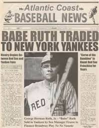

Boston Red Sox
The Boston Red Sox are one of the oldest francises in Major League Baseball. With a storied history, the Red Sox mystique runs deep throughout the city of Boston and throughout the nation. Red Sox Nation, as it is known is what drew me into becoming a Red Sox fan.
The Red Sox may best be known for the The Curse of the Bambino. A curse that was brought on by trading their most famous player Babe Ruth. The Babe was traded to the New York Yankees in 1914 and triggered an 85 year championship drought.
The Red Sox won the World Series in 2004. They beat the mighty New York Yankees in the ALCS in an unprecedented comeback. The 'Sox' came back from being down 3-0 in the series to defeat the Yankees and move on to defeat the St. Louis Cardinals in the World Series.
World Championships
- 1916
- 1918
- 2004
- 2007
- 2013
- 2018